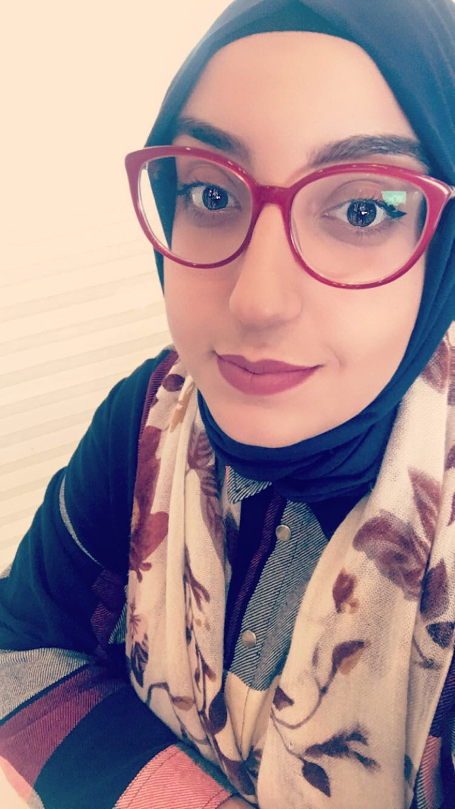

Non et Prénomdate de naissance Etat civil 0Adress Téléphone Adress Mail. |
Emna NASRAOUINée le 22 Aout 1994 Célibataire 06 Rue Cyclamen, Borj-Cedria 2084, Tunis (00216) 97 799 442 emna.nasraoui@live.frJeune diplomée |
 |
|---|
Formation |
2014-2018 : Diplôme de licence appliquée, Physique chimie de l’environnement ; Institut supérieur de la science et la technologie de l’environnement 2014 : Concours du baccalauréat, section Mathématique Lycée Borj Cedria |
|---|
Stages et Projets |
2015 : Centre de Biotechnologie de Borj Cédria- Stage d’été – 1 mois. 2018 : Stages PFE au centre internationale des technologies de l’environnement ; Validation d’une méthode du dosage du mercure par ICP |
|---|
Compétences et outils |
- Certifiée en TCF (Institut français de Tunisie) - Microsoft office - Certifiée en Aptis (British Council) |
|---|
Langues |
-Français : bon niveau (lu, écrit, parlé) -Anglais : bon niveau (lu, écrit, parlé) - Arabe : langue maternelle. |
|---|
Intérêts personnels et activités |
- Développement personnel et professionnel, - Participer aux événements JCI - Musique… - Membre fondateur à la Jeune Chambre Internationale JCI Les Berges du lac -Tunisie depuis 2015 ➤2018 : vice-président : trésorière ➤Juin 2017 : Participation au conférence africaine et moyen orient, Sousse, Tunisie ➤2017 : vice-président chargé de formation et développement ➤2016 : membre à JCI Les Berges du Lac ➤2015 : membre fondateur JCI Les Berges du Lac |
|---|